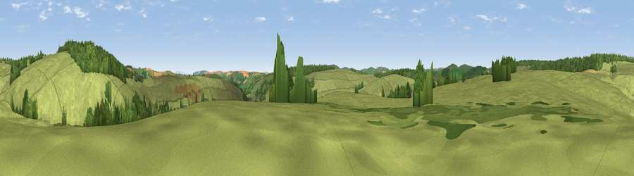

Viewpoint c5710_6380
#38432 in England · top 94% of its area beats it · —Where it is
The exact computed spot (SO 19025 85525). Click the marker for map links.
The view, rendered

A 360° render of this exact spot computed from the terrain model, tree cover and land cover — summer colours, afternoon light, calibrated against photographs of famous viewpoints. Real trees, hedges and buildings will differ in detail.
The panorama
Grey silhouette: terrain skyline in each direction (720 bearings, Earth curvature and refraction included). Dashed green: skyline with trees (+15 m) and buildings (+8 m) as obstacles. Blue strip: how far the ground is visible on each bearing.
Where the view opens
Wedge length = distance to the farthest visible ground on that bearing (vegetation-aware). Rings at 10, 25 and 50 km.
What fills the view
87% grassland · 12% woodland
Angular shares of the visible panorama (visual magnitude), not map area. Landscape diversity 0.17 (0–1 Shannon).
Key numbers
More beautiful places nearby
The staircase of upgrades: each row has a higher view potential than everything closer. Driving times are estimates from straight-line distance, calibrated against real road routing — check an actual route before setting out.
| Place | Direction | Drive | Score |
|---|---|---|---|
| Viewpoint c5720_6366 | NW · 1 km | ~3 min | 34.6 |
| Viewpoint c5731_6402 | NE · 2 km | ~4 min | 60.4 |
| Viewpoint c5772_6450 | NE · 4 km | ~10 min | 72.5 |
| Viewpoint near Bishop's Castle | ENE · 9 km | ~18 min | 75.5 |
| Viewpoint near Lydham | ENE · 17 km | ~29 min | 78.6 |
| Viewpoint near Hopton Castle | ESE · 19 km | ~32 min | 79.3 |
| Viewpoint near Asterton | E · 21 km | ~35 min | 83.0 |
| Viewpoint near Halfway House | NNE · 30 km | ~47 min | 83.3 |
52.46164, -3.19324 · source: screening · position refined by local search. Computed location — check access rights before visiting.